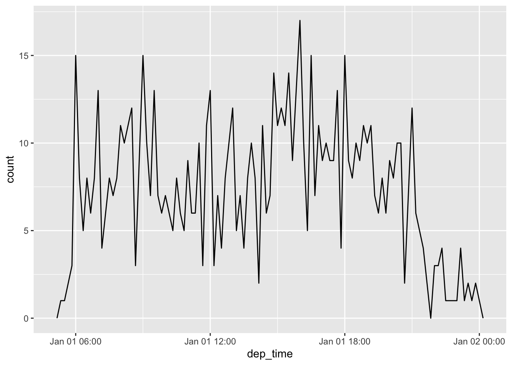

library(tidyverse)
library(nycflights13)
today()[1] "2023-11-01"now()[1] "2023-11-01 15:12:10 CDT"Milestone 4 will be graded partly on the diagnostic plots and their explanations and partly on improvements to the rest of the report.
fread() or data.table any moreread_csv (not read.csv)(just say there was little difference along this dimension)
alpha values to reduce the impact of overplotting(There may be exceptions in exploration but not presentation)
(Also don’t include the blank entries!)
For the final exam, you will have to create the \(y\) variable as a time span. Chapter 18 of Wickham, Çetinkaya-Rundel, and Grolemund (2023) tells you how to do this. Let’s review that chapter.
library(tidyverse)
library(nycflights13)
today()[1] "2023-11-01"now()[1] "2023-11-01 15:12:10 CDT"Suppose you have a comma-separated-values (csv) file containing ISO-formatted dates or date-times. It’s automatically recognized.
csv <- "
date,datetime
2022-01-02,2022-01-02 05:12
"
read_csv(csv)# A tibble: 1 × 2
date datetime
<date> <dttm>
1 2022-01-02 2022-01-02 05:12:00Suppose your input has dates not in standard format. You can do this for an ambiguous format:
csv <- "
date
01/02/15
"
read_csv(csv, col_types = cols(date = col_date("%m/%d/%y")))# A tibble: 1 × 1
date
<date>
1 2015-01-02read_csv(csv, col_types = cols(date = col_date("%d/%m/%y")))# A tibble: 1 × 1
date
<date>
1 2015-02-01read_csv(csv, col_types = cols(date = col_date("%y/%m/%d")))# A tibble: 1 × 1
date
<date>
1 2001-02-15The letters after the percent signs are format specifiers. Wickham, Çetinkaya-Rundel, and Grolemund (2023) has a long list of them in Chapter 18.
An alternative to the above approach is to use the helpers in the lubridate package, which is part of the tidyverse collection of packages. There are two kinds of helpers. First are the date helpers.
ymd("2017-01-31")[1] "2017-01-31"mdy("January 31st, 2017")[1] "2017-01-31"dmy("31-Jan-2017")[1] "2017-01-31"Second are the date-time helpers.
ymd_hms("2017-01-31 20:11:59")[1] "2017-01-31 20:11:59 UTC"mdy_hm("01/31/2017 08:01")[1] "2017-01-31 08:01:00 UTC"The nycflights13 data frame, which we loaded above, contains information about 336,000 flights originating from the three NYC area airports in 2013. It contains dats and times spread across different columns.
flights |>
select(year, month, day, hour, minute)# A tibble: 336,776 × 5
year month day hour minute
<int> <int> <int> <dbl> <dbl>
1 2013 1 1 5 15
2 2013 1 1 5 29
3 2013 1 1 5 40
4 2013 1 1 5 45
5 2013 1 1 6 0
6 2013 1 1 5 58
7 2013 1 1 6 0
8 2013 1 1 6 0
9 2013 1 1 6 0
10 2013 1 1 6 0
# ℹ 336,766 more rowsYou can handle this kind of input by using the make_datetime() function.
flights |>
select(year, month, day, hour, minute) |>
mutate(departure = make_datetime(year, month, day, hour, minute))# A tibble: 336,776 × 6
year month day hour minute departure
<int> <int> <int> <dbl> <dbl> <dttm>
1 2013 1 1 5 15 2013-01-01 05:15:00
2 2013 1 1 5 29 2013-01-01 05:29:00
3 2013 1 1 5 40 2013-01-01 05:40:00
4 2013 1 1 5 45 2013-01-01 05:45:00
5 2013 1 1 6 0 2013-01-01 06:00:00
6 2013 1 1 5 58 2013-01-01 05:58:00
7 2013 1 1 6 0 2013-01-01 06:00:00
8 2013 1 1 6 0 2013-01-01 06:00:00
9 2013 1 1 6 0 2013-01-01 06:00:00
10 2013 1 1 6 0 2013-01-01 06:00:00
# ℹ 336,766 more rowsYou can do the same with the other time columns.
make_datetime_100 <- function(year, month, day, time) {
make_datetime(year, month, day, time %/% 100, time %% 100)
}
flights_dt <- flights |>
filter(!is.na(dep_time), !is.na(arr_time)) |>
mutate(
dep_time = make_datetime_100(year, month, day, dep_time),
arr_time = make_datetime_100(year, month, day, arr_time),
sched_dep_time = make_datetime_100(year, month, day, sched_dep_time),
sched_arr_time = make_datetime_100(year, month, day, sched_arr_time)
) |>
select(origin, dest, ends_with("delay"), ends_with("time"))
flights_dt# A tibble: 328,063 × 9
origin dest dep_delay arr_delay dep_time sched_dep_time
<chr> <chr> <dbl> <dbl> <dttm> <dttm>
1 EWR IAH 2 11 2013-01-01 05:17:00 2013-01-01 05:15:00
2 LGA IAH 4 20 2013-01-01 05:33:00 2013-01-01 05:29:00
3 JFK MIA 2 33 2013-01-01 05:42:00 2013-01-01 05:40:00
4 JFK BQN -1 -18 2013-01-01 05:44:00 2013-01-01 05:45:00
5 LGA ATL -6 -25 2013-01-01 05:54:00 2013-01-01 06:00:00
6 EWR ORD -4 12 2013-01-01 05:54:00 2013-01-01 05:58:00
7 EWR FLL -5 19 2013-01-01 05:55:00 2013-01-01 06:00:00
8 LGA IAD -3 -14 2013-01-01 05:57:00 2013-01-01 06:00:00
9 JFK MCO -3 -8 2013-01-01 05:57:00 2013-01-01 06:00:00
10 LGA ORD -2 8 2013-01-01 05:58:00 2013-01-01 06:00:00
# ℹ 328,053 more rows
# ℹ 3 more variables: arr_time <dttm>, sched_arr_time <dttm>, air_time <dbl>Here are the departure times for January 2nd, 2013.
flights_dt |>
filter(dep_time < ymd(20130102)) |>
ggplot(aes(x = dep_time)) +
geom_freqpoly(binwidth = 600) # 600 s = 10 minutes
Base R provides a problematic construct for durations, the difftime object.
#. How old is Hadley?
h_age <- today() - ymd("1979-10-14")
h_ageTime difference of 16089 daysThe lubridate package provides a construct called duration.
as.duration(h_age)[1] "1390089600s (~44.05 years)"There are numerous duration constructors.
dseconds(15)[1] "15s"dminutes(10)[1] "600s (~10 minutes)"dhours(c(12, 24))[1] "43200s (~12 hours)" "86400s (~1 days)" ddays(0:5)[1] "0s" "86400s (~1 days)" "172800s (~2 days)"
[4] "259200s (~3 days)" "345600s (~4 days)" "432000s (~5 days)"dweeks(3)[1] "1814400s (~3 weeks)"dyears(1)[1] "31557600s (~1 years)"You can add and multiply durations.
2 * dyears(1)[1] "63115200s (~2 years)"dyears(1) + dweeks(12) + dhours(15)[1] "38869200s (~1.23 years)"You can add and subtract durations to and from days.
tomorrow <- today() + ddays(1)
last_year <- today() - dyears(1)Problem! Add one day to this particular date as a duration, but this particular date only has 23 hours because of daylight savings time.
one_am <- ymd_hms("2026-03-08 01:00:00", tz = "America/New_York")
one_am[1] "2026-03-08 01:00:00 EST"one_am + ddays(1)[1] "2026-03-09 02:00:00 EDT"This construct gets over some problems with durations, which are always exact numbers of seconds and take into account time zones and daylight savings time and leap years.
Periods have constructors, too.
hours(c(12, 24))[1] "12H 0M 0S" "24H 0M 0S"days(7)[1] "7d 0H 0M 0S"months(1:6)[1] "1m 0d 0H 0M 0S" "2m 0d 0H 0M 0S" "3m 0d 0H 0M 0S" "4m 0d 0H 0M 0S"
[5] "5m 0d 0H 0M 0S" "6m 0d 0H 0M 0S"You can add and multiply periods.
10 * (months(6) + days(1))[1] "60m 10d 0H 0M 0S"days(50) + hours(25) + minutes(2)[1] "50d 25H 2M 0S"Add them to dates and get the results you expect in the case of daylight savings time and leap years.
#. A leap year
ymd("2024-01-01") + dyears(1)[1] "2024-12-31 06:00:00 UTC"ymd("2024-01-01") + years(1)[1] "2025-01-01"#. Daylight Savings Time
one_am + ddays(1)[1] "2026-03-09 02:00:00 EDT"one_am + days(1)[1] "2026-03-09 01:00:00 EDT"Periods can fix the problem that some planes appear to arrive before they depart.
flights_dt |>
filter(arr_time < dep_time)# A tibble: 10,633 × 9
origin dest dep_delay arr_delay dep_time sched_dep_time
<chr> <chr> <dbl> <dbl> <dttm> <dttm>
1 EWR BQN 9 -4 2013-01-01 19:29:00 2013-01-01 19:20:00
2 JFK DFW 59 NA 2013-01-01 19:39:00 2013-01-01 18:40:00
3 EWR TPA -2 9 2013-01-01 20:58:00 2013-01-01 21:00:00
4 EWR SJU -6 -12 2013-01-01 21:02:00 2013-01-01 21:08:00
5 EWR SFO 11 -14 2013-01-01 21:08:00 2013-01-01 20:57:00
6 LGA FLL -10 -2 2013-01-01 21:20:00 2013-01-01 21:30:00
7 EWR MCO 41 43 2013-01-01 21:21:00 2013-01-01 20:40:00
8 JFK LAX -7 -24 2013-01-01 21:28:00 2013-01-01 21:35:00
9 EWR FLL 49 28 2013-01-01 21:34:00 2013-01-01 20:45:00
10 EWR FLL -9 -14 2013-01-01 21:36:00 2013-01-01 21:45:00
# ℹ 10,623 more rows
# ℹ 3 more variables: arr_time <dttm>, sched_arr_time <dttm>, air_time <dbl>These are overnight flights so fix the problem by adding a day.
flights_dt <- flights_dt |>
mutate(
overnight = arr_time < dep_time,
arr_time = arr_time + days(!overnight),
sched_arr_time = sched_arr_time + days(overnight)
)Intervals are like durations but with a specific starting point. They get around the problem that, for example, some years are longer than others, so that a year on average is 365.25 days. With an interval you can have a specific year of 365 days or a specific leap year of 366 days.
y2023 <- ymd("2023-01-01") %--% ymd("2024-01-01")
y2024 <- ymd("2024-01-01") %--% ymd("2025-01-01")
y2023[1] 2023-01-01 UTC--2024-01-01 UTCy2024[1] 2024-01-01 UTC--2025-01-01 UTCy2023 / days(1)[1] 365y2024 / days(1)[1] 366The book also provides extensive information about time zones but for the final exam you’ll only have one time zone, so that discussion is not strictly necessary for us.
The nycflights13 package provides five data frames that can be joined together.

Why would you store data this way? (Think about using the data over a long term and think about maintenance of the data.)
You can add the airline names to the flights by a left_join() function. It’s easier to see if you first limit the flights data frame to a few essential columns.
flights2 <- flights |>
select(year, time_hour, origin, dest, tailnum, carrier)
flights2 |> left_join(airlines)# A tibble: 336,776 × 7
year time_hour origin dest tailnum carrier name
<int> <dttm> <chr> <chr> <chr> <chr> <chr>
1 2013 2013-01-01 05:00:00 EWR IAH N14228 UA United Air Lines Inc.
2 2013 2013-01-01 05:00:00 LGA IAH N24211 UA United Air Lines Inc.
3 2013 2013-01-01 05:00:00 JFK MIA N619AA AA American Airlines Inc.
4 2013 2013-01-01 05:00:00 JFK BQN N804JB B6 JetBlue Airways
5 2013 2013-01-01 06:00:00 LGA ATL N668DN DL Delta Air Lines Inc.
6 2013 2013-01-01 05:00:00 EWR ORD N39463 UA United Air Lines Inc.
7 2013 2013-01-01 06:00:00 EWR FLL N516JB B6 JetBlue Airways
8 2013 2013-01-01 06:00:00 LGA IAD N829AS EV ExpressJet Airlines I…
9 2013 2013-01-01 06:00:00 JFK MCO N593JB B6 JetBlue Airways
10 2013 2013-01-01 06:00:00 LGA ORD N3ALAA AA American Airlines Inc.
# ℹ 336,766 more rowsThere are several different join functions described in Wickham, Çetinkaya-Rundel, and Grolemund (2023) in Chapter 20. You’ll only need the left join for this week’s exercises, but reading Chapter 20 is still a very good idea.
You should also read about sqldf, a package for running SQL statements on R data frames. Following is an example of its use.
library(sqldf)
sqldf("SELECT carrier, COUNT(*)
FROM flights
GROUP BY carrier
ORDER BY 2 DESC;") carrier COUNT(*)
1 UA 58665
2 B6 54635
3 EV 54173
4 DL 48110
5 AA 32729
6 MQ 26397
7 US 20536
8 9E 18460
9 WN 12275
10 VX 5162
11 FL 3260
12 AS 714
13 F9 685
14 YV 601
15 HA 342
16 OO 32sqlFlightsWnames <- sqldf("SELECT fl.carrier, name
FROM flights fl
LEFT join airlines ai
ON fl.carrier=ai.carrier;")
sqldf("SELECT name, COUNT(*)
FROM sqlFlightsWnames
GROUP BY name
ORDER BY 2 DESC;") name COUNT(*)
1 United Air Lines Inc. 58665
2 JetBlue Airways 54635
3 ExpressJet Airlines Inc. 54173
4 Delta Air Lines Inc. 48110
5 American Airlines Inc. 32729
6 Envoy Air 26397
7 US Airways Inc. 20536
8 Endeavor Air Inc. 18460
9 Southwest Airlines Co. 12275
10 Virgin America 5162
11 AirTran Airways Corporation 3260
12 Alaska Airlines Inc. 714
13 Frontier Airlines Inc. 685
14 Mesa Airlines Inc. 601
15 Hawaiian Airlines Inc. 342
16 SkyWest Airlines Inc. 32sort(table(flights$carrier),decreasing=TRUE)
UA B6 EV DL AA MQ US 9E WN VX FL AS F9
58665 54635 54173 48110 32729 26397 20536 18460 12275 5162 3260 714 685
YV HA OO
601 342 32 flightsWnames <- flights |> left_join(airlines)
sort(table(flightsWnames$name),decreasing=TRUE)
United Air Lines Inc. JetBlue Airways
58665 54635
ExpressJet Airlines Inc. Delta Air Lines Inc.
54173 48110
American Airlines Inc. Envoy Air
32729 26397
US Airways Inc. Endeavor Air Inc.
20536 18460
Southwest Airlines Co. Virgin America
12275 5162
AirTran Airways Corporation Alaska Airlines Inc.
3260 714
Frontier Airlines Inc. Mesa Airlines Inc.
685 601
Hawaiian Airlines Inc. SkyWest Airlines Inc.
342 32 The only difference between the output of these two approaches is that the native R plus tidyverse version uses more horizontal space in the output because of its use of a variable that records how wide your display is. The SQL version is piped (by default) to SQLite3, which doesn’t know the width of your display and which returns a single column response. You can substitute other database engines for SQLite3, such as PostgreSQL and MySQL. SQLite3 is an extremely fast, tiny database engine which is useful for single-user applications. For example, most smartphone applications (including all Android and iOS) use SQLite3 to store information, making SQLite3 the world’s most popular database (by some measures). SQLite3 is also used by most web browsers to store information.
As another example, here is a join between two tables that have synonymous columns with different names. The flights table includes two columns with FAA airport codes: origin and dest, while the airports table contains a single column with FAA airport codes: faa. To join them, we have to tell R the join key. That’s shown below, along with an sqldf version of the same thing.
library(tidyverse)
library(nycflights13)
flights |>
left_join(airports, join_by(dest == faa)) |>
select(year,month,day,dep_time,name) |>
head()# A tibble: 6 × 5
year month day dep_time name
<int> <int> <int> <int> <chr>
1 2013 1 1 517 George Bush Intercontinental
2 2013 1 1 533 George Bush Intercontinental
3 2013 1 1 542 Miami Intl
4 2013 1 1 544 <NA>
5 2013 1 1 554 Hartsfield Jackson Atlanta Intl
6 2013 1 1 554 Chicago Ohare Intl Now the (slightly different) sqldf version.
library(sqldf)
library(nycflights13)
result <- sqldf("
SELECT f.year, f.month, f.day, f.dep_time, a.name
FROM flights f
LEFT JOIN airports a ON f.dest = a.faa
LIMIT 5
")
result year month day dep_time name
1 2013 1 1 517 George Bush Intercontinental
2 2013 1 1 533 George Bush Intercontinental
3 2013 1 1 542 Miami Intl
4 2013 1 1 544 <NA>
5 2013 1 1 554 Hartsfield Jackson Atlanta IntlAccording to a post from R-Pubs on sqldf, the following SQL keywords are available. Note that these may only be used in the context of a SELECT statement.
A person named Massimo Franceschet did an interesting exercise in using sqldf vs base R and I have slightly adapted it below.
library(tidyverse)
library(nycflights13)
library(sqldf)
#. add id to flights
flights <- mutate(flights, id = 1:nrow(flights)) |>
select(id, everything())
#. flights on Christmas
sqldf("
select *
from flights
where month = 12 and day = 25
limit 5;
") id year month day dep_time sched_dep_time dep_delay arr_time
1 105233 2013 12 25 456 500 -4 649
2 105234 2013 12 25 524 515 9 805
3 105235 2013 12 25 542 540 2 832
4 105236 2013 12 25 546 550 -4 1022
5 105237 2013 12 25 556 600 -4 730
sched_arr_time arr_delay carrier flight tailnum origin dest air_time distance
1 651 -2 US 1895 N156UW EWR CLT 98 529
2 814 -9 UA 1016 N32404 EWR IAH 203 1400
3 850 -18 AA 2243 N5EBAA JFK MIA 146 1089
4 1027 -5 B6 939 N665JB JFK BQN 191 1576
5 745 -15 AA 301 N3JLAA LGA ORD 123 733
hour minute time_hour
1 5 0 2013-12-25 04:00:00
2 5 15 2013-12-25 04:00:00
3 5 40 2013-12-25 04:00:00
4 5 50 2013-12-25 04:00:00
5 6 0 2013-12-25 05:00:00#. R
flights |>
subset(month == 12 & day == 25 ) |>
head(5)# A tibble: 5 × 20
id year month day dep_time sched_dep_time dep_delay arr_time
<int> <int> <int> <int> <int> <int> <dbl> <int>
1 105233 2013 12 25 456 500 -4 649
2 105234 2013 12 25 524 515 9 805
3 105235 2013 12 25 542 540 2 832
4 105236 2013 12 25 546 550 -4 1022
5 105237 2013 12 25 556 600 -4 730
# ℹ 12 more variables: sched_arr_time <int>, arr_delay <dbl>, carrier <chr>,
# flight <int>, tailnum <chr>, origin <chr>, dest <chr>, air_time <dbl>,
# distance <dbl>, hour <dbl>, minute <dbl>, time_hour <dttm>#. flights that have a delay (either on departure or on arrival)
sqldf("
select *
from flights
where dep_delay is not null or arr_delay is not null
limit 5;
") id year month day dep_time sched_dep_time dep_delay arr_time sched_arr_time
1 1 2013 1 1 517 515 2 830 819
2 2 2013 1 1 533 529 4 850 830
3 3 2013 1 1 542 540 2 923 850
4 4 2013 1 1 544 545 -1 1004 1022
5 5 2013 1 1 554 600 -6 812 837
arr_delay carrier flight tailnum origin dest air_time distance hour minute
1 11 UA 1545 N14228 EWR IAH 227 1400 5 15
2 20 UA 1714 N24211 LGA IAH 227 1416 5 29
3 33 AA 1141 N619AA JFK MIA 160 1089 5 40
4 -18 B6 725 N804JB JFK BQN 183 1576 5 45
5 -25 DL 461 N668DN LGA ATL 116 762 6 0
time_hour
1 2013-01-01 04:00:00
2 2013-01-01 04:00:00
3 2013-01-01 04:00:00
4 2013-01-01 04:00:00
5 2013-01-01 05:00:00#. R
flights |>
subset(!is.na(dep_delay) | !is.na(arr_delay)) |>
head(5)# A tibble: 5 × 20
id year month day dep_time sched_dep_time dep_delay arr_time
<int> <int> <int> <int> <int> <int> <dbl> <int>
1 1 2013 1 1 517 515 2 830
2 2 2013 1 1 533 529 4 850
3 3 2013 1 1 542 540 2 923
4 4 2013 1 1 544 545 -1 1004
5 5 2013 1 1 554 600 -6 812
# ℹ 12 more variables: sched_arr_time <int>, arr_delay <dbl>, carrier <chr>,
# flight <int>, tailnum <chr>, origin <chr>, dest <chr>, air_time <dbl>,
# distance <dbl>, hour <dbl>, minute <dbl>, time_hour <dttm>#. flights that were not cancelled (that is, those with valid departure and arrival times)
sqldf("
select *
from flights
where dep_time is not null and arr_time is not null
limit 5;
") id year month day dep_time sched_dep_time dep_delay arr_time sched_arr_time
1 1 2013 1 1 517 515 2 830 819
2 2 2013 1 1 533 529 4 850 830
3 3 2013 1 1 542 540 2 923 850
4 4 2013 1 1 544 545 -1 1004 1022
5 5 2013 1 1 554 600 -6 812 837
arr_delay carrier flight tailnum origin dest air_time distance hour minute
1 11 UA 1545 N14228 EWR IAH 227 1400 5 15
2 20 UA 1714 N24211 LGA IAH 227 1416 5 29
3 33 AA 1141 N619AA JFK MIA 160 1089 5 40
4 -18 B6 725 N804JB JFK BQN 183 1576 5 45
5 -25 DL 461 N668DN LGA ATL 116 762 6 0
time_hour
1 2013-01-01 04:00:00
2 2013-01-01 04:00:00
3 2013-01-01 04:00:00
4 2013-01-01 04:00:00
5 2013-01-01 05:00:00#. R
flights |>
subset(!is.na(dep_time) & !is.na(arr_time)) |>
head(5)# A tibble: 5 × 20
id year month day dep_time sched_dep_time dep_delay arr_time
<int> <int> <int> <int> <int> <int> <dbl> <int>
1 1 2013 1 1 517 515 2 830
2 2 2013 1 1 533 529 4 850
3 3 2013 1 1 542 540 2 923
4 4 2013 1 1 544 545 -1 1004
5 5 2013 1 1 554 600 -6 812
# ℹ 12 more variables: sched_arr_time <int>, arr_delay <dbl>, carrier <chr>,
# flight <int>, tailnum <chr>, origin <chr>, dest <chr>, air_time <dbl>,
# distance <dbl>, hour <dbl>, minute <dbl>, time_hour <dttm>#. flights that have a departure delay sorted by delay
sqldf("
select *
from flights
where dep_delay > 0
order by dep_delay desc
limit 5;
") id year month day dep_time sched_dep_time dep_delay arr_time
1 7073 2013 1 9 641 900 1301 1242
2 235779 2013 6 15 1432 1935 1137 1607
3 8240 2013 1 10 1121 1635 1126 1239
4 327044 2013 9 20 1139 1845 1014 1457
5 270377 2013 7 22 845 1600 1005 1044
sched_arr_time arr_delay carrier flight tailnum origin dest air_time distance
1 1530 1272 HA 51 N384HA JFK HNL 640 4983
2 2120 1127 MQ 3535 N504MQ JFK CMH 74 483
3 1810 1109 MQ 3695 N517MQ EWR ORD 111 719
4 2210 1007 AA 177 N338AA JFK SFO 354 2586
5 1815 989 MQ 3075 N665MQ JFK CVG 96 589
hour minute time_hour
1 9 0 2013-01-09 08:00:00
2 19 35 2013-06-15 18:00:00
3 16 35 2013-01-10 15:00:00
4 18 45 2013-09-20 17:00:00
5 16 0 2013-07-22 15:00:00#. R
df <- flights |>
subset(dep_delay > 0)
df[order(desc(df$dep_delay)), ] |>
head(5)# A tibble: 5 × 20
id year month day dep_time sched_dep_time dep_delay arr_time
<int> <int> <int> <int> <int> <int> <dbl> <int>
1 7073 2013 1 9 641 900 1301 1242
2 235779 2013 6 15 1432 1935 1137 1607
3 8240 2013 1 10 1121 1635 1126 1239
4 327044 2013 9 20 1139 1845 1014 1457
5 270377 2013 7 22 845 1600 1005 1044
# ℹ 12 more variables: sched_arr_time <int>, arr_delay <dbl>, carrier <chr>,
# flight <int>, tailnum <chr>, origin <chr>, dest <chr>, air_time <dbl>,
# distance <dbl>, hour <dbl>, minute <dbl>, time_hour <dttm>#. flights that managed to catch up during the flight sorted by catch up time
sqldf("
select id, dep_delay, arr_delay, (dep_delay - arr_delay) as catchup
from flights
where catchup > 0
order by catchup desc
limit 5;
") id dep_delay arr_delay catchup
1 234103 235 126 109
2 133682 60 -27 87
3 131144 206 126 80
4 205313 17 -62 79
5 134563 24 -52 76#. R
df <- flights |>
transform(catchup = dep_delay - arr_delay) |>
subset(subset = (catchup > 0), select = c(id, dep_delay, arr_delay, catchup))
df[order(desc(df$catchup)), ] |>
head(5) id dep_delay arr_delay catchup
234103 234103 235 126 109
133682 133682 60 -27 87
131144 131144 206 126 80
205313 205313 17 -62 79
134563 134563 24 -52 76#. The number of flights per day
sqldf("
select month, day, count(*) as count
from flights
group by month, day
limit 5
") month day count
1 1 1 842
2 1 2 943
3 1 3 914
4 1 4 915
5 1 5 720#. R
df <- aggregate(id ~ day + month, flights, FUN = length)
colnames(df)[3] = c("count")
df |> head(5) day month count
1 1 1 842
2 2 1 943
3 3 1 914
4 4 1 915
5 5 1 720#. The busy days (with more than 1000 flights)
sqldf("
select month, day, count(*) as count
from flights
group by month, day
having count > 1000
limit 5;
") month day count
1 7 8 1004
2 7 9 1001
3 7 10 1004
4 7 11 1006
5 7 12 1002#. R
df <- aggregate(id ~ day + month, flights, FUN = length)
colnames(df)[3] = "count"
df |>
subset(count > 1000) |>
head(5) day month count
189 8 7 1004
190 9 7 1001
191 10 7 1004
192 11 7 1006
193 12 7 1002#. The number of flights per destination
sqldf("
select dest, count(*) as count
from flights
group by dest
limit 5;
") dest count
1 ABQ 254
2 ACK 265
3 ALB 439
4 ANC 8
5 ATL 17215#. R
df <- aggregate(id ~ dest, flights, FUN = length)
colnames(df)[2] = "count"
head(df,5) dest count
1 ABQ 254
2 ACK 265
3 ALB 439
4 ANC 8
5 ATL 17215#. The popular destinations (with more than 365 flights) sorted by number of flights in descending order
sqldf("
select dest, count(*) as count
from flights
group by dest
having count > 365
order by count desc
limit 5;
") dest count
1 ORD 17283
2 ATL 17215
3 LAX 16174
4 BOS 15508
5 MCO 14082#. R
df <- aggregate(id ~ dest, flights, FUN = length)
colnames(df)[2] = "count"
df <- df |> subset(count > 365)
head(df[order(desc(df$count)), ],5) dest count
70 ORD 17283
5 ATL 17215
50 LAX 16174
12 BOS 15508
55 MCO 14082#. the mean departure delay per day sorted in decreasing order of all flights on busy days of summer
sqldf("
select month, day, count(*) as count, avg(dep_delay) as avg_delay
from flights
where month = 6 or month = 7 or month = 8
group by month, day
having count > 1000
order by avg_delay desc
limit 5;
") month day count avg_delay
1 7 10 1004 52.86070
2 8 8 1001 43.34995
3 7 8 1004 37.29665
4 7 9 1001 30.71150
5 7 12 1002 25.09615#. R (stack overflow)
df <- aggregate(dep_delay ~ day + month, flights,
FUN = function(x) cbind(count = length(x), avg_delay = mean(x, na.rm = TRUE)),
na.action = NULL)
# df$dep_delay is a matrix
str(df)'data.frame': 365 obs. of 3 variables:
$ day : int 1 2 3 4 5 6 7 8 9 10 ...
$ month : int 1 1 1 1 1 1 1 1 1 1 ...
$ dep_delay: num [1:365, 1:2] 842 943 914 915 720 832 933 899 902 932 ...# unnest
df <- cbind(df[,1:2], df[,3])
colnames(df)[3:4] = c("count", "avg_delay")
# filter
df <- subset(df, count > 1000)
# order
head(df[order(desc(df$avg_delay)), ],5) day month count avg_delay
191 10 7 1004 52.86070
220 8 8 1001 43.34995
189 8 7 1004 37.29665
190 9 7 1001 30.71150
193 12 7 1002 25.09615#. Flights that flew with a plane manufactured by BOEING
sqldf("
select flights.id, flights.tailnum, planes.manufacturer
from flights, planes
where flights.tailnum = planes.tailnum and planes.manufacturer = 'BOEING'
limit 5;
") id tailnum manufacturer
1 746 N11206 BOEING
2 1162 N11206 BOEING
3 2105 N11206 BOEING
4 5499 N11206 BOEING
5 6769 N11206 BOEING#. R
# all.x = TRUE --> left join
# all.y = TRUE --> right join
# all = TRUE --> full join
# all = FALSE --> inner join
df <- flights |>
merge(planes, by="tailnum", all.x = TRUE)
subset(df, subset = (manufacturer == "BOEING"), select = c("id", "tailnum", "manufacturer")) |>
head(5) id tailnum manufacturer
4426 220945 N11206 BOEING
4427 252368 N11206 BOEING
4428 12885 N11206 BOEING
4429 132376 N11206 BOEING
4430 302467 N11206 BOEING#. Flights that flew to a destination with an altitude greater than 6000 feet sorted by altitude
sqldf("
select flights.id, flights.dest, airports.name, airports.alt
from flights, airports
where flights.dest = airports.faa and airports.alt > 6000
order by airports.alt
limit 5;
") id dest name alt
1 153 JAC Jackson Hole Airport 6451
2 1068 JAC Jackson Hole Airport 6451
3 100067 JAC Jackson Hole Airport 6451
4 101062 JAC Jackson Hole Airport 6451
5 101913 JAC Jackson Hole Airport 6451#. R
df <- merge(flights, airports, by.x = "dest", by.y = "faa", all.x = TRUE)
df <- subset(df, subset = (alt > 6000), select = c("id", "dest", "name", "alt"))
head(df[order(df$alt), ],5) id dest name alt
154976 153 JAC Jackson Hole Airport 6451
154977 157037 JAC Jackson Hole Airport 6451
154978 102007 JAC Jackson Hole Airport 6451
154979 131009 JAC Jackson Hole Airport 6451
154980 104658 JAC Jackson Hole Airport 6451#. Flights that took off with a plane with 4 engines and a visibility lower than 3 miles
sqldf("
select flights.id, planes.engines, weather.visib
from flights, weather, planes
where flights.month = weather.month and flights.day = weather.day and flights.hour = weather.hour and
flights.origin = weather.origin and weather.visib < 3 and flights.tailnum = planes.tailnum and planes.engines = 4
limit 5;
") id engines visib
1 25295 4 0.00
2 182566 4 0.12
3 10066 4 2.50
4 11278 4 0.25
5 120234 4 0.06#. R
df <- merge(flights, weather, all.x = TRUE)
df <- merge(df, planes, by = "tailnum", all.x = TRUE)
subset(df, subset = (visib < 3 & engines == 4), select = c("id", "engines", "visib")) |>
head(5) id engines visib
120872 25295 4 0.00
235911 182566 4 0.12
292212 120734 4 0.06
292225 10066 4 2.50
292232 11278 4 0.25#. Flights with destination and origin airports with an altitude difference of more than 6000 feet
sqldf("
select flights.id, airports2.alt, airports1.alt, (airports2.alt - airports1.alt) as altdelta
from flights, airports as airports1, airports as airports2
where flights.origin = airports1.faa and flights.dest = airports2.faa and altdelta > 6000
limit 5;
") id alt alt altdelta
1 153 6451 18 6433
2 194 6540 18 6522
3 571 6540 13 6527
4 1068 6451 18 6433
5 1095 6540 18 6522#. R
df <- merge(flights, airports, by.x = "origin", by.y = "faa", all.x = TRUE)
df <- merge(df, airports, by.x = "dest", by.y = "faa", all.x = TRUE)
df <- subset(df, select = c("id", "alt.x", "alt.y"))
df <- transform(df, altdelta = alt.y - alt.x)
subset(df, altdelta > 6000) |>
head(5) id alt.x alt.y altdelta
121549 155570 13 6540 6527
121550 149990 13 6540 6527
121551 125764 13 6540 6527
121552 149018 13 6540 6527
121553 165081 18 6540 6522